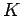

Inhalt Index DeskTop Bronstein

 Funktionentheorie Integration im Komplexen Integralsatz von Cauchy, Hauptsatz der Funktionentheorie
Funktionentheorie Integration im Komplexen Integralsatz von Cauchy, Hauptsatz der Funktionentheorie


Wenn einfach geschlossene Kurven derart sind, daß die Kurve K alle
einschließt, aber die  sich nicht gegenseitig einschließen oder schneiden, und wenn ferner f(z) in einem Gebiet G analytisch ist, das alle
sich nicht gegenseitig einschließen oder schneiden, und wenn ferner f(z) in einem Gebiet G analytisch ist, das alle  und das Gebiet zwischen K und den
und das Gebiet zwischen K und den  enthält, d.h. mindestens in dem in der folgenden Abbildung schraffiert gezeichneten Gebiet, dann gilt
enthält, d.h. mindestens in dem in der folgenden Abbildung schraffiert gezeichneten Gebiet, dann gilt
 |
(14.41) |
falls die Kurven sämtlich im gleichen Sinne, z.B. gegen den Uhrzeigersinn, durchlaufen werden.
Dieser Satz dient zur Berechnung von Integralen über geschlossene Kurven , die auch singuläre Punkte der Funktion f(z) einschließen (s. auch Residuensatz).
| Beispiel |
|
Das Integral ist zu berechnen, wobei K eine den Nullpunkt und den Punkt z=-1 umschließende Kurve sein soll (s. Abbildung).
Nach dem Integralsatz von CAUCHY kann man zunächst das Integral über K durch die Summe der Integrale über K1 und K2 ersetzen,wobei K1 ein Kreis um den Nullpunkt mit dem Radius r1=1/2 und K2 ein Kreis um den Punkt z=-1 mit dem Radius r2=1/2 sein soll. Der Integrand läßt sich durch Partialbruchzerlegung vereinfachen, und man erhält |